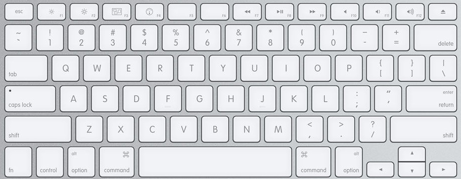
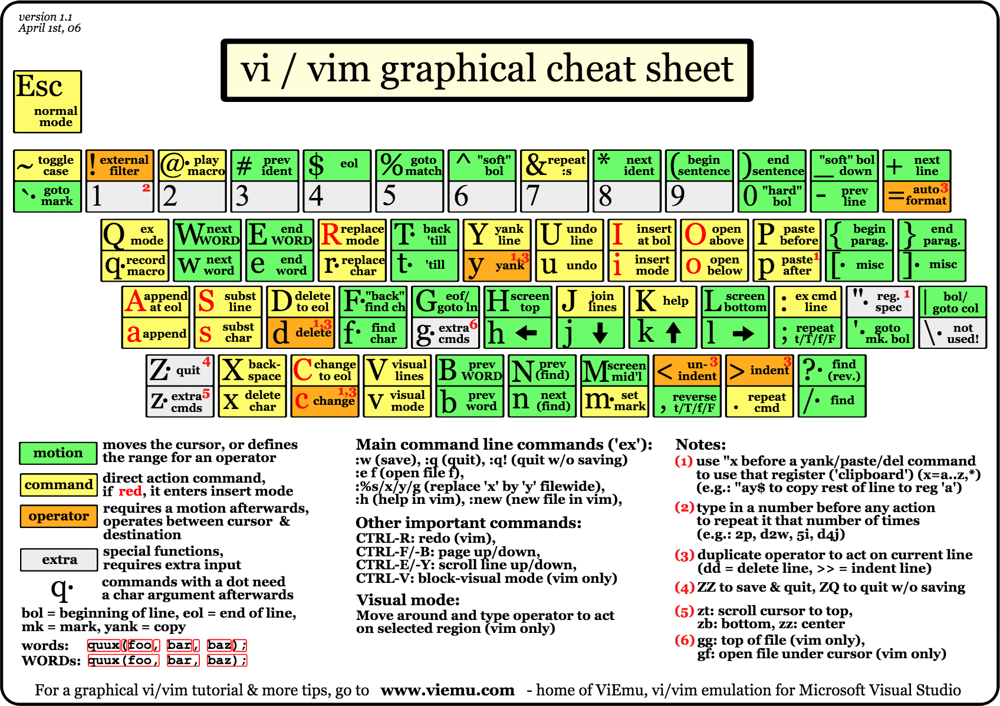
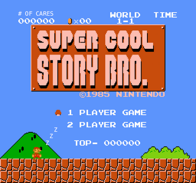

Why Vim is Awesome
Jonathan Warner
@jaxbot
https://jaxbot.me/
Caveat
Vim isn't for everyone.
Caveat
Vim isn't for everyone.
Use these ideas to refine your workflow in whatever environment you use.
Vim is pretty awesome, though.
Reasons I love Vim
- Comfortable key layout
- Advanced editing tools
- Plugins
Key layout


Vi keeps all the operation keys within the home row
Your hands never have to reach for arrow keys or function keys.
You never touch the mouse.
Vim is a modal text editor
Different modes are switched between to determine which operations to perform.

Why would you want modes?
Most work done when coding is editing, not writing.
Some more advanced moves
Macros
Plugins
That's Vim.
Vim is:
- Comfortable
- Powerful
- In active development
- Installed on just about any machine.
Resources
https://jaxbot.me/articles/vim-getting-started
reddit r/vim
#vim on Orlando Devs Slack
@jaxbot on Twitter
github.com/jaxbot